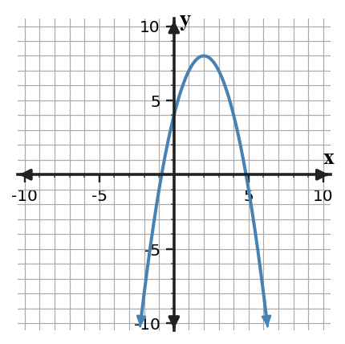
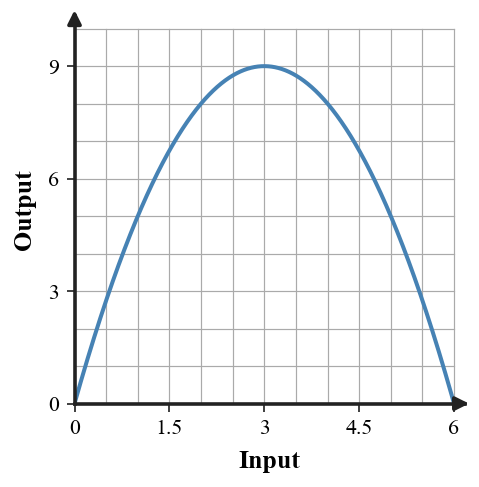

Comparing Quadratic Forms
Mathematical idea: Standard, factored, and vertex forms can represent the same quadratic while highlighting different graph features.
Today you will compare equivalent quadratic forms and decide which form is most useful for a given purpose. You will connect forms to zeros, vertex, y-intercept, maximums, and minimums.
Learning Target
Learning Target: Students will compare standard, vertex, and factored forms of quadratic functions and determine which form best reveals key features.
I can statements
- I can construct equivalent quadratic forms to reveal different key features.
- I can interpret standard, vertex, and factored forms to read key features of quadratic functions.
- I can critique which quadratic form best supports a given question or context.
What's To Come
This is a long-range preview for future lessons. Do not solve it today. Instead, annotate it individually. Circle anything familiar, underline symbols or directions that seem important, and write notes about what information you think will be needed later.
As you annotate, ask yourself: What parts (words, symbols, graphs) do you KNOW? What parts look FAMILIAR? What parts look like jibberish?
Design a short context where the zeros and vertex of a quadratic both have meaning. Give the model in two equivalent forms and explain which form answers each contextual question best.
Teacher preview: Students should annotate familiar words, symbols, and representations only. Do not solve the future task here.
Intro
Directions
Read the introduction aloud with a partner or in a small group. As you read, annotate the text by highlighting important ideas, circling key vocabulary, and writing short notes about connections, questions, or predictions in the margins.
Quadratic functions can be written in different forms. Factored form usually makes zeros easiest to read because the factors show which inputs produce an output of zero. That makes it useful for intercept and break-even questions.
Vertex form highlights the turning point of the parabola. The vertex gives the maximum or minimum value depending on whether the parabola opens down or up. This form is useful when a question asks for a best, highest, lowest, or most efficient value.
Equivalent forms give the same outputs for every input, but they do not make the same information equally visible. One form may answer a question quickly, while another form may require rewriting or graphing. Choosing a form is a strategy decision, not just a preference.
Standard form can make the y-intercept easy to see and supports expansion or comparison of coefficients. Factored form connects to zeros, while vertex form connects to the axis of symmetry and the turning point. Graphs can help confirm that the forms represent the same parabola.
In real situations, the best form depends on the question. A business context might need zeros for break-even, a vertex for maximum profit, and a y-intercept for starting value.
Teacher: Listen for students citing the paragraph language and connecting it to a representation or algebraic structure.
Stop and Discuss
- What feature is easiest to read from factored form?
- What feature is easiest to read from vertex form?
- Why might two equivalent forms be useful for different questions?
Teacher answers: Q1 is directly answered in paragraph A; Q2 is directly answered in paragraph B; Q3 is inferred from paragraph C. Follow-up: ask students to underline the evidence sentence before sharing.
The same quadratic can appear in forms that reveal different features.
$$x^2-4x-5=(x-5)(x+1)=(x-2)^2-9$$| Form | Example | Feature revealed |
|---|---|---|
| Standard | $x^2-4x-5$ | y-intercept $-5$ |
| Factored | $(x-5)(x+1)$ | zeros $5$ and $-1$ |
| Vertex | $(x-2)^2-9$ | vertex $(2,-9)$ |

Context: The forms are equivalent because they give the same graph and the same outputs.
Example 1: Name the Form
Classify $y=2x^2-3x+1$, $y=(x-4)(x+2)$, and $y=(x-1)^2+5$.
Use the structure of each expression to name its form.
- Which expression is standard form?
- Which is factored form?
- Which is vertex form?
Teacher answer key: Standard, factored, vertex in that order. Misconception watch: ask students to justify each step with structure, not only a final answer.
You Try It 1: Sort Quadratic Forms
Classify $y=-x^2+6x$, $y=(x+5)(x-1)$, and $y=3(x+2)^2-4$.
Name each form using its structure.
- Which is standard form?
- Which is factored form?
- Which is vertex form?
Teacher answer key: Standard, factored, vertex in that order. Follow-up: ask students which part matched the example and which number changed.
Stop and Discuss
- What mathematical structure did Example 1 and You Try It 1 have in common?
- What check would convince you that the answer is reasonable?
Teacher discussion note: Form names come from visible structure. Ask students to point to a term, factor, feature, or graph evidence.
Vertex form shows the turning point directly.
$$p(x)=-(x-2)^2+8$$| Feature | Value |
|---|---|
| Vertex | $(2,8)$ |
| Opens | down |
| Maximum value | 8 |

Context: If $p(x)$ is profit, the maximum profit is 8 units when $x=2$.
Example 2: Find Features from Equivalent Forms
For $f(x)=x^2-2x-8$, write factored form and identify zeros and y-intercept.
Use the form that makes each feature easiest.
- Factor the expression.
- Identify the zeros.
- Identify the y-intercept.
Teacher answer key: $(x-4)(x+2)$; zeros 4 and -2; y-intercept $(0,-8)$. Misconception watch: ask students to justify each step with structure, not only a final answer.
You Try It 2: Use a Useful Form
For $f(x)=x^2+x-12$, write factored form and identify zeros and y-intercept.
Use factoring for zeros and standard form for the y-intercept.
- Factor the expression.
- Identify the zeros.
- Identify the y-intercept.
Teacher answer key: $(x+4)(x-3)$; zeros -4 and 3; y-intercept $(0,-12)$. Follow-up: ask students which part matched the example and which number changed.
Stop and Discuss
- What mathematical structure did Example 2 and You Try It 2 have in common?
- What check would convince you that the answer is reasonable?
Teacher discussion note: Different features may be easiest in different equivalent forms. Ask students to point to a term, factor, feature, or graph evidence.
Example 3: Read Vertex Form
For $g(x)=-(x-3)^2+7$, identify the vertex and maximum or minimum value.
Use the sign and vertex form structure.
- What is the vertex?
- Does the graph open up or down?
- What is the maximum or minimum value?
Teacher answer key: Vertex $(3,7)$; opens down; maximum value 7. Misconception watch: ask students to justify each step with structure, not only a final answer.
You Try It 3: Interpret Vertex Form
For $h(x)=2(x+1)^2-6$, identify the vertex and maximum or minimum value.
Use the sign of the coefficient and the vertex form.
- What is the vertex?
- Does the graph open up or down?
- What is the maximum or minimum value?
Teacher answer key: Vertex $(-1,-6)$; opens up; minimum value -6. Follow-up: ask students which part matched the example and which number changed.
Stop and Discuss
- What mathematical structure did Example 3 and You Try It 3 have in common?
- What check would convince you that the answer is reasonable?
Teacher discussion note: Vertex form gives the turning point before graphing. Ask students to point to a term, factor, feature, or graph evidence.
Choose the form that makes the requested feature most visible.
$$q(x)=-x(x-6)=-(x-3)^2+9$$| Question | Helpful form | Reason |
|---|---|---|
| When is output 0? | Factored | zeros are visible |
| What is the maximum? | Vertex | turning point is visible |
| What is the starting value? | Either form | evaluate $q(0)$ |

Context: A single context may require more than one equivalent form.
Example 4: Choose the Best Form
A quadratic profit model can be written as $P(x)=-(x-2)(x-8)$ or $P(x)=-(x-5)^2+9$.
Decide which form helps answer each question.
- Which form helps find break-even values?
- Which form helps find maximum profit?
- Explain why both forms can describe the same model.
Teacher answer key: Factored form for break-even $x=2,8$; vertex form for maximum 9 at $x=5$; equivalent forms give same outputs. Misconception watch: ask students to justify each step with structure, not only a final answer.
You Try It 4: Pick a Form for the Job
A height model is $H(t)=-t(t-10)$ and also $H(t)=-(t-5)^2+25$.
Choose a form for each question.
- Which form finds when height is 0?
- Which form finds the maximum height?
- Why are both forms useful?
Teacher answer key: Factored form for zeros 0 and 10; vertex form for maximum 25 at 5; both reveal different features. Follow-up: ask students which part matched the example and which number changed.
Stop and Discuss
- What mathematical structure did Example 4 and You Try It 4 have in common?
- What check would convince you that the answer is reasonable?
Teacher discussion note: The question determines which form is most efficient. Ask students to point to a term, factor, feature, or graph evidence.
Summary
Equivalent quadratic forms represent the same relationship but reveal different features.
Factored form makes zeros and x-intercepts direct, while vertex form makes the vertex and maximum or minimum direct.
Standard form can make the y-intercept visible and supports expansion or coefficient comparisons.
Choosing a form should be based on the question being asked and the feature that needs to be interpreted.
Common Mistakes
- Treating forms as different functions. Why it is tempting: the expressions look different. What to check instead: evaluate a few inputs or compare graphs to check equivalence.
- Using the wrong form for the question. Why it is tempting: students use whichever form appears first. What to check instead: identify the needed feature before choosing a form.
- Reading the vertex from standard form. Why it is tempting: the numbers are visible but not the vertex directly. What to check instead: rewrite or use a graph when the vertex is needed.
- Forgetting context meaning. Why it is tempting: features are listed without units. What to check instead: translate zeros, vertex, and intercepts back into the situation.
- Assuming factored form always exists neatly. Why it is tempting: not every quadratic factors over integers. What to check instead: use the given form or another method if factoring is not efficient.
Optional Future Task Reflection
Look back at the future task. Do not solve it yet. Highlight one part that makes more sense now than it did at the beginning. Circle one part that still feels unfamiliar. Write one sentence about what representation you would look at first.
Name the form of each quadratic: standard, vertex, or factored.
- $y=x^2-6x+5$
- $y=(x-1)(x-5)$
- $y=(x-3)^2-4$
For $f(x)=x^2-6x+5$, write factored form and vertex form. Then identify the zeros, vertex, and y-intercept.
What is one idea about comparing quadratic forms and key features you understand better now than at the start of class? Write at least one complete sentence.
What is one thing about comparing quadratic forms and key features you still want to understand or practice? Be specific — name the idea, not just "everything."